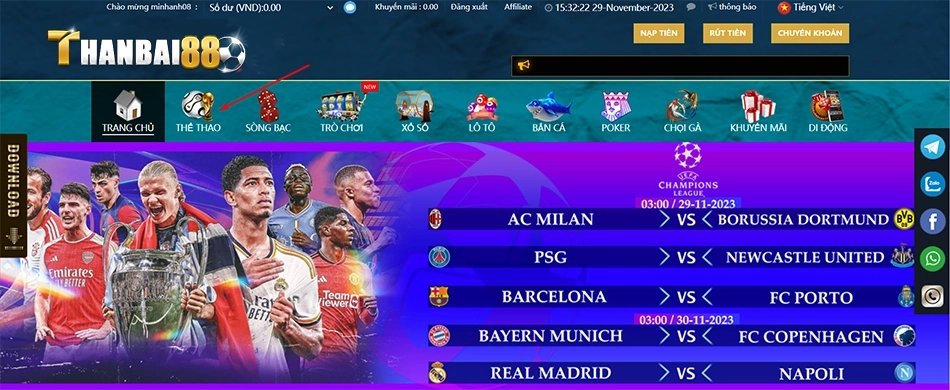
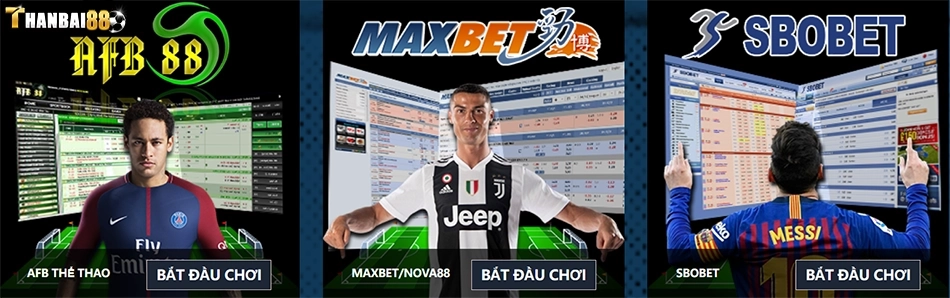

Thể thao Thanbai88 – Nhà cái cá độ bóng đá uy tín số 1 Việt Nam
Thanbai88 là một nhà cái cá độ bóng đá trực tuyến uy tín hàng đầu tại Việt Nam. Với nhiều năm kinh nghiệm hoạt động, Thanbai88 đã khẳng định được vị thế và uy tín của mình trên thị trường cá cược online.
Hướng dẫn cách chơi cá độ bóng đá hiệu quả tại Thanbai88

Để chơi cá độ bóng đá hiệu quả tại Thanbai88, người chơi cần nắm rõ các bước cơ bản sau:
Bước 1: Đăng ký tài khoản Thanbai88
Truy cập vào trang web thanbai88.art và chọn mục đăng ký tài khoản.
Điền đầy đủ các thông tin cá nhân được yêu cầu như họ tên, số điện thoại, email,…
Xác nhận và hoàn tất đăng ký tài khoản.
Bước 2: Nạp tiền vào tài khoản
Sau khi đăng ký tài khoản thành công, bạn cần nạp tiền để có thể đặt cược.
Thanbai88 hỗ trợ nhiều hình thức nạp tiền như thẻ cào, chuyển khoản, ví điện tử,…
Chọn hình thức phù hợp và nhập số tiền cần nạp rồi xác nhận giao dịch.
Bước 3: Đặt cược cá độ bóng đá
Khi đã có tiền trong tài khoản, bạn có thể bắt đầu đặt cược các trận bóng đá.
Chọn trận đấu, kiểm tra thông tin kèo, đội hình, phong độ để đưa ra quyết định đặt cược chính xác.
Đặt cược vào các cửa kèo mà bạn cho là có khả năng thắng cao nhất.
Theo dõi kết quả và nhận tiền thưởng nếu chiến thắng.
Những bước cơ bản trên sẽ giúp bạn nhanh chóng làm quen với hình thức cá độ bóng đá trực tuyến tại Thanbai88. Để có thể chiến thắng thường xuyên, bạn cần nắm vững các chiến thuật và kinh nghiệm cá cược.
Ưu điểm vượt trội của nhà cái Thanbai88 so với các nhà cái khác
Thanbai88 sở hữu nhiều ưu điểm vượt trội, giúp người chơi có trải nghiệm cá cược tốt nhất:
Giao diện thân thiện, dễ sử dụng trên nhiều thiết bị
Giao diện được thiết kế hiện đại, thân thiện với người dùng.
Có thể truy cập đa nền tảng: website, ứng dụng trên điện thoại, máy tính.
Thao tác đặt cược đơn giản, dễ sử dụng.
Tỷ lệ cược cạnh tranh, payout cao
Tỷ lệ kèo cược cạnh tranh và hấp dẫn nhất thị trường.
Hệ số hoàn trả cao, lên tới 95% cho nhiều trận đấu lớn.
Thường xuyên cập nhật kèo mới, tỷ lệ kèo chính xác.
Nhiều sảnh cá cược bóng đá uy tín
Hợp tác với các nhà cung cấp sảnh uy tín hàng đầu: Saba, CMD, IM,…
Đa dạng các loại hình cược phù hợp với mọi đối tượng người chơi.
Bảo mật thông tin người chơi, đảm bảo an toàn giao dịch.
Với những ưu điểm trên, Thanbai88 xứng đáng là sự lựa chọn hàng đầu của người chơi cá cược tại Việt Nam.
Kinh nghiệm lựa chọn kèo, đặt cược cá độ bóng đá Thanbai88
Để đạt được tỷ lệ thắng cao khi cá độ bóng đá tại Thanbai88, người chơi cần nắm rõ một số kinh nghiệm sau:
Phân tích kỹ càng trước khi lựa chọn kèo cược
Phân tích đội hình, phong độ của cả hai đội trước trận đấu.
Đánh giá chiến thuật, lối chơi của hai đội.
Xem xét yếu tố sân nhà, sân khách của các đội.
Cân nhắc các yếu tố bên ngoài ảnh hưởng tới trận đấu.
Chọn kèo phù hợp với năng lực cá cược
Không nên chọn các kèo quá khó để tránh thua lỗ nặng.
Nên chọn kèo có tỷ lệ chấp thấp và khả năng dự đoán cao.
Chia số tiền cược hợp lý giữa các kèo để giảm rủi ro.
Theo dõi thị trường để nắm bắt xu hướng kèo
Luôn cập nhật thông tin thị trường để biết được xu hướng kèo của các nhà cái.
Đánh giá xu hướng thay đổi kèo để điều chỉnh chiến thuật cá cược.
Tận dụng sự thay đổi kèo đột ngột để tìm ra cơ hội đặt cược tốt.
Với kinh nghiệm trên, bạn sẽ dễ dàng hơn trong việc lựa chọn kèo và đưa ra quyết định đặt cược chính xác, gia tăng cơ hội chiến thắng.
Các sảnh cá cược bóng đá uy tín tại Thanbai88

Thanbai88 hợp tác với các nhà cung cấp sảnh bóng đá uy tín hàng đầu thế giới như:
Sảnh Saba – Thiên đường cá độ bóng đá số 1
Sảnh cá cược trực tuyến lâu đời và uy tín bậc nhất châu Á.
Giao diện đẹp mắt, dễ sử dụng.
Hỗ trợ nhiều loại hình cược: cược trước trận, cược nửa trận, cược tài xỉu,…
Tỷ lệ cược cạnh tranh, thanh toán nhanh chóng.
Sảnh CMD – Sân chơi cá cược chất lượng hàng đầu
Sảnh cá cược trực tuyến số 1 châu Âu.
Giao diện thân thiện, dễ sử dụng cho người Việt.
Đa dạng các giải đấu, các hình thức cược.
Hệ thống bảo mật tốt, tỷ lệ cược hấp dẫn.
Sảnh IM – Sự lựa chọn hoàn hảo dành cho người chơi mới
Sảnh cá cược dành riêng cho người mới tham gia.
Hướng dẫn chi tiết cách chơi, luật chơi cá cược.
Giao diện đơn giản, dễ hiểu.
Nhiều kèo cược phù hợp với người mới tham gia.
Với sự hợp tác của các đối tác sảnh cá cược uy tín, Thanbai88 mang đến cho người chơi những trải nghiệm chất lượng cá cược tốt nhất.
Hướng dẫn đăng ký, nạp rút tiền Thanbai88 chi tiết nhất
Để sử dụng được các dịch vụ của Thanbai88, người chơi cần nắm rõ các bước đăng ký, nạp rút tiền như sau:
Hướng dẫn đăng ký tài khoản Thanbai88
Truy cập vào thanbai88.art và chọn nút đăng ký.
Điền các thông tin cá nhân được yêu cầu.
Xác minh số điện thoại để hoàn tất đăng ký.
Đăng nhập vào tài khoản vừa tạo để sử dụng.
Cách nạp rút tiền Thanbai88
Thanbai88 hỗ trợ nhiều hình thức nạp rút như thẻ, ví điện tử, chuyển khoản.
Nhập số tiền, chọn hình thức giao dịch và xác nhận.
Kiểm tra lại thông tin trước khi xác nhận giao dịch.
Tiền sẽ được chuyển đến tài khoản ngay khi giao dịch thành công.
Giải đáp thắc mắc về tài khoản, giao dịch Thanbai88
Liên hệ fanpage hoặc nhân viên tư vấn Thanbai88.
Cung cấp các thông tin liên quan đến vấn đề gặp phải.
Nhân viên sẽ hỗ trợ xử lý vấn đề trong thời gian sớm nhất.
Với hướng dẫn trên, người chơi có thể dễ dàng đăng ký, giao dịch tại Thanbai88. Đây là bước quan trọng giúp bạn có thể bắt đầu trải nghiệm cá cược thể thao.
Lời kết
Như vậy, Thanbai88 chính là lựa chọn số 1 dành cho người chơi cá cược bóng đá tại Việt Nam. Với nhiều năm kinh nghiệm và uy tín được khẳng định, Thanbai88 sở hữu một hệ thống cá cược chuyên nghiệp và mang đến nhiều trải nghiệm tuyệt vời cho người chơi.
Để có thể chiến thắng và thu về lợi nhuận lớn tại Thanbai88, người chơi cần tuân thủ các bước cơ bản từ đăng ký tài khoản, nạp rút tiền đến việc lựa chọn kèo cược phù hợp. Bên cạnh đó, người chơi cũng cần liên tục học hỏi, trau dồi kinh nghiệm để nâng cao kỹ năng phân tích và dự đoán kèo chính xác.
Hy vọng với những thông tin hữu ích trong bài viết, bạn đọc sẽ lựa chọn được cho mình một địa chỉ cá cược bóng đá uy tín và chất lượng nhất. Chúc các bạn thành công và thu về nhiều phần thưởng hấp dẫn cùng Thanbai88!